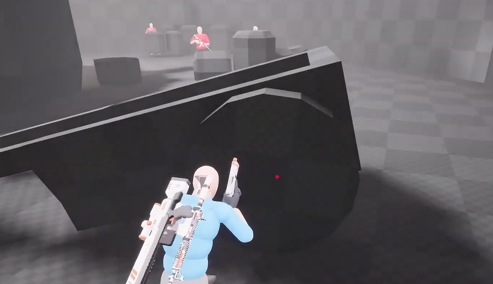
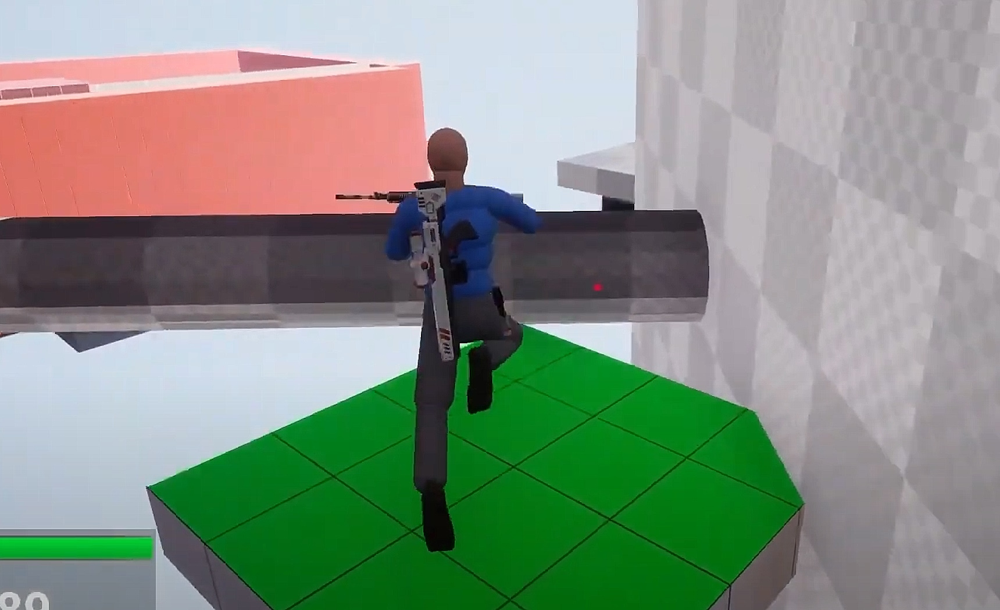

Adventure Game Whitebox
A whiteboxed level for an action adventure game (along the lines of Uncharted) made in Unreal Engine for a university assignment. We worked in a team of two to create two linked levels - I was responsible for the second level. Skip to 5:00 to see the level I created.
We decided to go with scaling a tower as the basis for the second level, because it defines an extremely clear goal in the players mind as soon as they see the tower, meaning there's no need to explain the goal in a way that would detract from their immersion.
A major aspect of the level that didn't work initially was two moving platforms that the player had to time correctly to get on. They ruined the pacing as there was a good chance that the platforms wouldn''t be there when the player arrived and they would have to wait for it (or they wouldn't see it at all and would get confused). This was rectified by preventing the platforms from moving until the player stood on them.'
It was very enjoyable working in a pair to create a smooth experience! The first level, created by Unreal programmer Jake Hood, was connected to mine via a one-way cave system, which loaded my level and prevented the player from going back to the beginning in a natural and believable way.